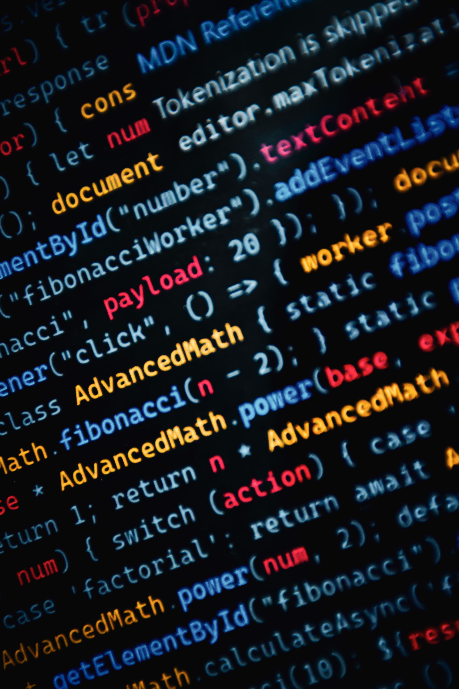
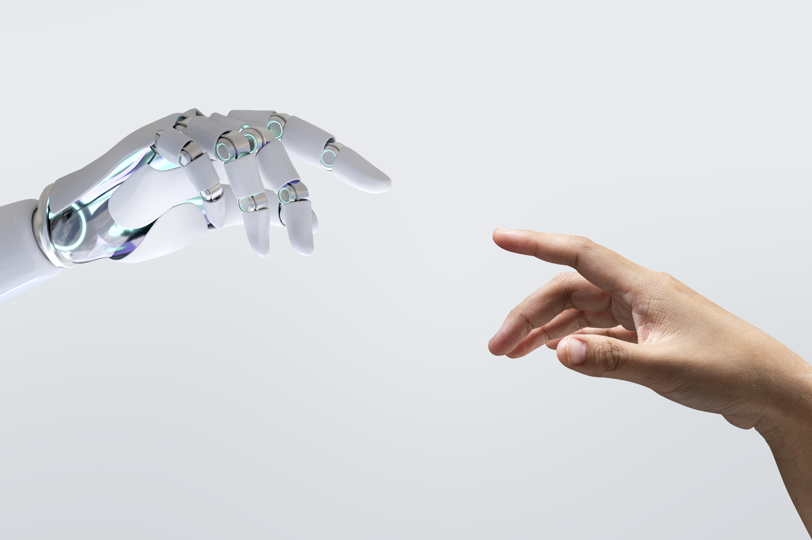

Як технології змінюють світ
Сучасні технології стрімко розвиваються, повністю змінюючи спосіб нашого життя, навчання та роботи. Завдяки автоматизації та інноваціям людство отримало інструменти, які раніше здавалися науковою фантастикою.
Що зараз популярне
Сьогодні найвищий попит мають штучний інтелект (AI) та машинне навчання, які оптимізують процеси у медицині, фінансах та освіті.
Не менш важливими є хмарні обчислення та технології кібербезпеки. Інтеграція цих рішень дозволяє бізнесу та суспільству ставати мобільнішими.
Технології в повсякденному житті
Сьогодні ми користуємося технологіями щодня, навіть не помічаючи цього. Смартфон допомагає зв'язуватися з близькими, навігатор прокладає маршрут, а онлайн-сервіси дозволяють замовити їжу, купити квиток або оплатити рахунки за кілька хвилин. Навчання теж змінилося: лекції можна дивитися у запису, а завдання здавати через інтернет.
Інтернет речей і розумний дім
Ще один напрям, який швидко розвивається, це Інтернет речей. Побутові прилади, лампи, камери та датчики підключаються до мережі й обмінюються даними. Завдяки цьому можна керувати освітленням чи опаленням із телефону та економити електроенергію.
Виклики та майбутнє
Разом із перевагами з'являються й нові проблеми. Потрібно захищати особисті дані, вчитися відрізняти правдиву інформацію від фейків і не забувати про живе спілкування. Фахівці вважають, що в майбутньому технології стануть ще доступнішими, а люди, які вміють з ними працювати, будуть дуже затребуваними.
Тематичні фотографії


Мої посилання
Про штучний інтелект Сайт про кібербезпеку
Натисніть на цю картинку: